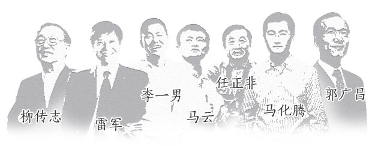

汇添富民营活力股票基金长期业绩优异。作为国内首只聚焦民营企业的产品，成立以来业绩达322.86%，在同类基金中排名第二。
今年以来业绩123.56%，在同类基金中排名第一。
汇添富采用的投资决策机制是投资决策委员会领导下的、团队研究基础上的基金经理负责制。
汇添富民营经济及大消费研究团队实力雄厚经验丰富，由朱晓亮先生（汇添富民营活力股票基金经理）领衔负责。
汇添富看民营企业：“投资就是投人，具备企业家精神的优秀民营企业才是未来经济的新动力。”
全市场过去250日涨幅前20股票中，
民企占比达90%
过去250日涨幅排名前500股票中，
民企占比达60%
数据来源：WIND，数据统计日期：2014.5.30-2015.5.30
专注、极致和创新是民营企业家的新风貌。
这些新成长起来的民营企业家，有情怀、有抱负，不断创造新的商业模式，敏锐把握新的市场 机会，成为行业中的佼佼者。
新兴行业已成为中国经济创新发展的驱动力，如互联网、新能源、新消费行业等。
民营企业是新兴行业的主力军，是创新的源动力。
本材料仅供交流之用，不构成任何法律文件。基金管理人承诺以诚实信用、勤勉尽责的原则管理和运用基金资产，但不保证本基金一定盈利，也不保 证最低收益。投资人应当认真阅读《基金合同》、《招募说明书》等基金法律文件，基金管理人提醒投资人基金投资的“买者自负原则”。基金业绩经 托管人复核，基金过往业绩并不预示其未来表现，基金管理人管理的其他基金的业绩并不构成基金业绩表现的保证。我国基金运作时间较短，不能反 映股市发展的所有阶段。详细业绩请登录官网查询。基金投资需谨慎。汇添富民营活力股票基金业绩比较基准为中证民营企业综合指数*80%+上证国 债指数*20%。各年度净值增长率和业绩比较基准收益率分别为：2010.5.5-2010.12.31:15.00%、11.92%；2011年：-20.78%、-23.95%； 2012年：17.45%，2.09%；2013年：38.17%、22.50%；2014年：27.94%、24.33%；2015.1.1-2015.6.30:123.56%、62.50%。 业绩排名数据来源于中国银河证券基金研究中心。